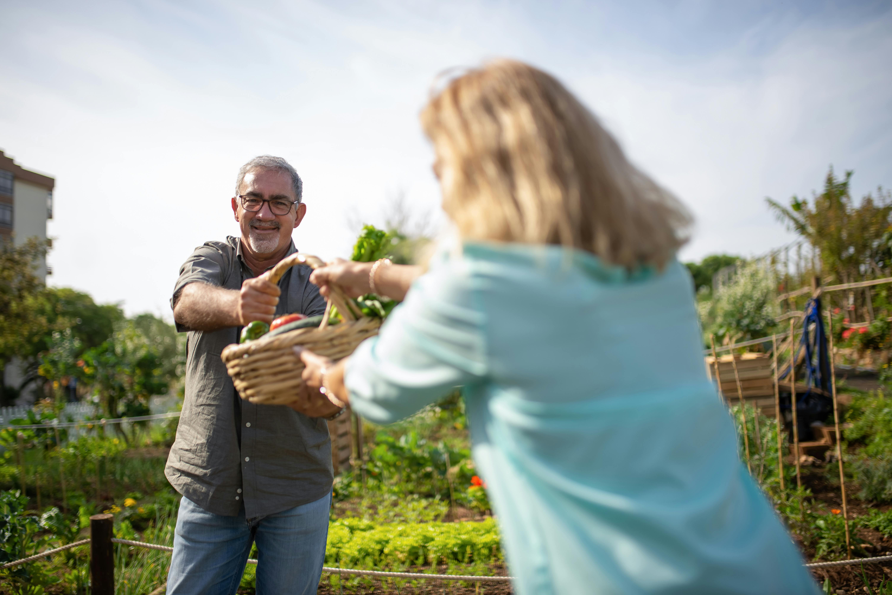

HortHome
Conectando produtores locais e consumidores através de uma produção mais saudável, acessível e sustentável.
O que é a HortHome?
A HortHome é uma plataforma criada para aproximar produtores locais e consumidores, incentivando uma alimentação mais saudável e fortalecendo pequenos produtores.

O que você encontra aqui?
Marketplace
Encontre verduras, legumes e produtos naturais diretamente de produtores locais.
Rede de produtores
Um espaço para produtores trocarem experiências, ideias e oportunidades.
Capacitação
Cursos e conteúdos sobre cultivo, organização e empreendedorismo.
Delivery
Receba produtos frescos e naturais diretamente na sua casa.
Mais do que uma plataforma
A HortHome busca incentivar sustentabilidade, empreendedorismo local e uma alimentação mais consciente através da tecnologia e da conexão entre pessoas.
Conheça nossa históriaFaça parte da HortHome
Escolha como deseja participar da plataforma.